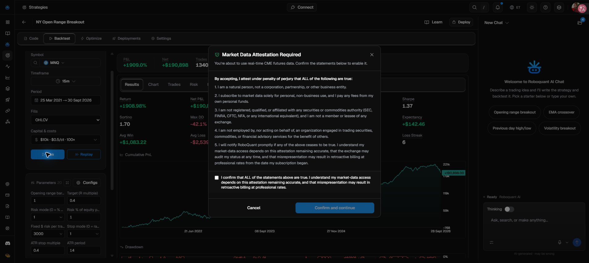
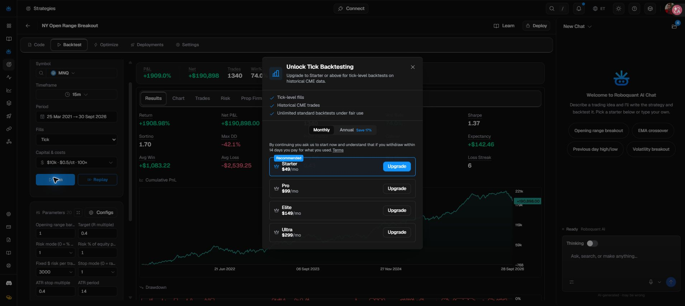

NY Open Range Breakout
Reproduction audit
This is the Roboquant MNQ 15-minute template, not the earlier NQ Precision Bot. The original strategy source was extracted and its 20 unchanged benchmark parameters exported to a Roboquant .set file.
Strategy source (.rq)Unchanged parameters (.set)Audit dataOriginal template
Published showcase — not independently rerun
MNQ · 15m · 25 March 2021–30 September 2026 (displayed date window). $10,000 starting capital, $3,000 fixed risk, tick fills, $0.50 commission per contract per side, 0.005% slippage and 100× leverage.
Reproduction status
| Execution model | Status | Fresh results |
|---|---|---|
| Original showcase · ticks | Existing saved benchmark | Published only |
| Our identical tick rerun | Paid-plan requirement | None |
| Our OHLCV alternative | CME attestation required | None |
OHLCV is a different fill model. Even if a free bar-data run completes, it cannot establish identical tick-data reproduction. Exness USTEC is also a different instrument and data feed from CME MNQ; a later US100 test would be an adaptation, not a like-for-like reproduction.
Published yearly breakdown
| Year | Net P&L | Trades | Win rate | Account return |
|---|---|---|---|---|
| 2021 · partial | +$31,376.50 | 189 | 75.7% | +313.76% |
| 2022 | +$14,620.50 | 243 | 72.4% | +35.34% |
| 2023 | +$26,721.00 | 245 | 73.9% | +47.72% |
| 2024 | +$50,082.00 | 246 | 75.2% | +60.55% |
| 2025 | +$56,590.50 | 233 | 74.7% | +42.61% |
| 2026 · partial | +$11,507.50 | 184 | 72.3% | +6.08% |
Yearly account returns use the continuing account balance, not a new $10,000 account each January. These are transcribed platform figures; no per-year PF or Sharpe was fabricated.
What the code actually does
- Builds the 09:30–09:45 New York opening range from the first 15-minute bar.
- Enters at market after a later 15-minute candle closes above the high or below the low. It does not use the previous bot's 09:59:55 snapshot.
- Requires the breakout bar's volume to be at least the mean of the previous 20 bars. The rolling history includes overnight bars and is not reset daily.
- Requires ATR(14) / closing price × 100 to be between 0.10% and 0.60%.
- Uses an initial stop at 0.4 × ATR(14), with target at 0.4R, equivalent to 0.16 × ATR. No trailing stop is present.
- Sizes integer contracts by flooring $3,000 / (stop distance × contract multiplier); skips if this computes to zero.
- Allows both directions, at most one trade per exchange date; cutoff input 15:00 ET and flatten input 15:55 ET.
Risk warning: $3,000 is 30% of the starting $10,000 account, not 1%. The low 0.4R target helps explain the high win rate. At an exact 0.4R payout, theoretical break-even is 71.43% before costs. Neither the high headline return nor win rate establishes a safe live strategy.
Replication details and limitations
- The source evaluates session times using
bar.time. Roboquant documentation describes this as bar-open time, whileon_barprocesses a completed bar. Consequently the 15:55 flatten input is not an exact 15:55 tick timer. Its actual exit timing still needs a fresh trade-log check; do not silently change it in a reproduction. - Stop and target are anchored to signal-bar close, not subsequently repositioned to the realised entry fill.
- Source and exported preset match the browser editor text after normalising line endings. The preset was exported from the untouched research-copy parameters; it is not claimed byte-identical to the original template attachment.
- The .rq file is Roboquant Rust, not an MT5 .mq5/.ex5 EA. The .set is a Roboquant parameter preset, not an installer for your active MT5 bots.
- Research strategy ID:
cb3f4965-1936-4bc2-b069-0389e7a81355. Copied showcase backtest ID:a9ddd735-d0a0-4a28-bf28-2fcdcdded4c4. Visible source version:48b6d5f. - Source SHA-256:
610129617431D2E1BC1C722FCC0F31A6B1F53832F4E612FF9078908DD07F597D. - Preset SHA-256:
407A76989267433D0A346BF358D3FC26EA0C1E0C334128295AD1D8BA4AEDA2B7.
Roboquant callback documentation. No account upgrade, declaration acceptance, production deployment, active BAT change or Git push was performed.
Why the rerun stopped
The account owner must review and truthfully complete the market-data attestation. Exact tick reruns additionally need an eligible paid plan. No declaration was accepted and no subscription was purchased.

Tick-mode paid-plan requirement
